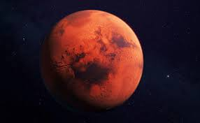
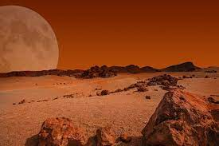

Mars – czwarta od Słońca planeta Układu Słonecznego. Krąży między orbitą Ziemi a pasem planetoid, dzielącym go od orbity Jowisza. Planeta została nazwana od imienia rzymskiego boga wojny – Marsa, zawdzięcza ją barwie, która przy obserwacji z Ziemi wydaje się rdzawo-czerwona i kojarzyła się starożytnym Rzymianom z pożogą wojenną. Odcień ten bierze się od tlenków żelaza pokrywających powierzchnię. Mars jest planetą wewnętrzną z cienką atmosferą, o powierzchni usianej kraterami uderzeniowymi, podobnie jak powierzchnia Księżyca i wielu innych ciał Układu Słonecznego. Występują na nim różne rodzaje terenu, podobne do ziemskich: wulkany, doliny, kaniony, pustynie i polarne czapy lodowe. Okres obrotu wokół własnej osi jest niewiele dłuższy niż ziemski i wynosi 24,6229 godziny (24 h 37 m 22 s). Na Marsie znajduje się najwyższy wulkan w Układzie Słonecznym – Olympus Mons i największy kanion – Valles Marineris. Gładki obszar równinny Vastitas Borealis na półkuli północnej, który obejmuje 40% powierzchni planety, może być pozostałością ogromnego uderzenia. W przeciwieństwie do Ziemi, Mars jest mało aktywny geologicznie i nie ma tektoniki płyt.